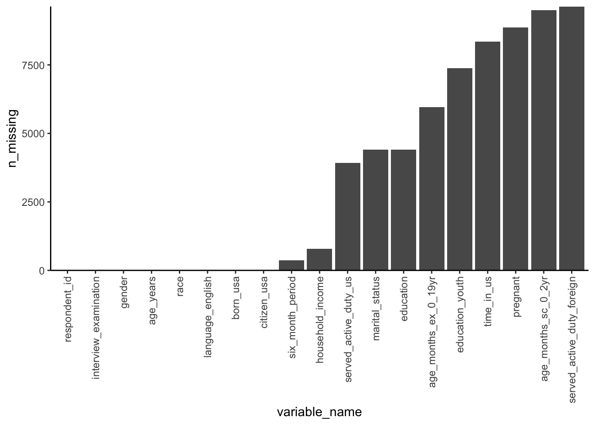

The purpose of this lesson is to learn how to iteratively apply functions to all elements contained within an object, such as all columns in a data frame, or all entries in a vector.
The “purrr” R package that we will be using in this lesson is included in the tidyverse package.
# load the tidyverse and demographics datasetlibrary(tidyverse)
── Attaching core tidyverse packages ──────────────────────── tidyverse 2.0.0 ──
✔ dplyr 1.1.4 ✔ readr 2.1.5
✔ forcats 1.0.0 ✔ stringr 1.5.1
✔ ggplot2 3.5.1 ✔ tibble 3.2.1
✔ lubridate 1.9.3 ✔ tidyr 1.3.1
✔ purrr 1.0.2
── Conflicts ────────────────────────────────────────── tidyverse_conflicts() ──
✖ dplyr::filter() masks stats::filter()
✖ dplyr::lag() masks stats::lag()
ℹ Use the conflicted package (<http://conflicted.r-lib.org/>) to force all conflicts to become errors
demographics <-read_csv("data/demographics.csv")
Rows: 10175 Columns: 19
── Column specification ────────────────────────────────────────────────────────
Delimiter: ","
chr (5): interview_examination, gender, race, marital_status, pregnant
dbl (9): respondent_id, age_years, age_months_sc_0_2yr, six_month_period, ag...
lgl (5): served_active_duty_us, served_active_duty_foreign, born_usa, citize...
ℹ Use `spec()` to retrieve the full column specification for this data.
ℹ Specify the column types or set `show_col_types = FALSE` to quiet this message.
The function that we want to iterate first is the n_distinct() function from the tidyverse.
Recall that to pull up the help page for a function, you can use the following syntax:
# pull up the help page for n_distinct?n_distinct
n_distinct() counts the number of unique values in a vector.
# apply n_distinct to the "gender" column of demographicsn_distinct(demographics$gender)
[1] 2
The code below uses the map() function to apply n_distinct() to every column of the demographics data frame simultaneously:
# use map() to apply n_distinct to every column of demographicsmap(demographics, n_distinct)
Lists, like vectors, correspond to a collection of values contained in a single object.
You can use the list() function to define a list, for example:
# define a list called my_list with three elements: 1, 4, and 7my_list <-list(1, 4, 7)
You can extract elements from a list just as you would from a vector, using the square bracket notation. The code below extracts the third element from my_list:
# extract the third entry from my_list using []my_list[3]
[[1]]
[1] 7
# ask the class of the object aboveclass(my_list[3])
[1] "list"
However, the output above is a list itself.
If you want to extract the actual object/value contained within the third element of the list, then you need to use double square parentheses:
# extract the third entry from my_list using [[]]my_list[[3]]
[1] 7
Unlike vectors, lists are not vectorized.
# try to add 1 to my_listmy_list +1
Error in my_list + 1: non-numeric argument to binary operator
Why would we ever prefer lists to vectors? The reason is that lists are infinitely more flexible than vectors. While all entries in a vector must be a single value of the same type, entries of a list can be anything.
# create a list my_complex_list containing # (1) the head of demographics, # (2) the value 2, and # (3) a vector containing "a" and "b"my_complex_list <-list(head(demographics), 2, c("a", "b"))my_complex_list
[[1]]
# A tibble: 6 × 19
respondent_id interview_examination gender age_years age_months_sc_0_2yr race
<dbl> <chr> <chr> <dbl> <dbl> <chr>
1 73557 both interview and e… male 69 NA black
2 73558 both interview and e… male 54 NA white
3 73559 both interview and e… male 72 NA white
4 73560 both interview and e… male 9 NA white
5 73561 both interview and e… female 73 NA white
6 73562 both interview and e… male 56 NA mexi…
# ℹ 13 more variables: six_month_period <dbl>, age_months_ex_0_19yr <dbl>,
# served_active_duty_us <lgl>, served_active_duty_foreign <lgl>,
# born_usa <lgl>, citizen_usa <lgl>, time_in_us <dbl>, education_youth <dbl>,
# education <dbl>, marital_status <chr>, pregnant <chr>,
# language_english <lgl>, household_income <dbl>
[[2]]
[1] 2
[[3]]
[1] "a" "b"
You can also create a named list when defining it as if you are defining argument names:
# create a named version of my_complex_listmy_complex_list <-list(data =head(demographics), value =2, vector =c("a", "b"))my_complex_list
$data
# A tibble: 6 × 19
respondent_id interview_examination gender age_years age_months_sc_0_2yr race
<dbl> <chr> <chr> <dbl> <dbl> <chr>
1 73557 both interview and e… male 69 NA black
2 73558 both interview and e… male 54 NA white
3 73559 both interview and e… male 72 NA white
4 73560 both interview and e… male 9 NA white
5 73561 both interview and e… female 73 NA white
6 73562 both interview and e… male 56 NA mexi…
# ℹ 13 more variables: six_month_period <dbl>, age_months_ex_0_19yr <dbl>,
# served_active_duty_us <lgl>, served_active_duty_foreign <lgl>,
# born_usa <lgl>, citizen_usa <lgl>, time_in_us <dbl>, education_youth <dbl>,
# education <dbl>, marital_status <chr>, pregnant <chr>,
# language_english <lgl>, household_income <dbl>
$value
[1] 2
$vector
[1] "a" "b"
You can then extract entries from the named list using $ or [[]]
# extract one of the elements from my_complex_list using $my_complex_list$data
# A tibble: 6 × 19
respondent_id interview_examination gender age_years age_months_sc_0_2yr race
<dbl> <chr> <chr> <dbl> <dbl> <chr>
1 73557 both interview and e… male 69 NA black
2 73558 both interview and e… male 54 NA white
3 73559 both interview and e… male 72 NA white
4 73560 both interview and e… male 9 NA white
5 73561 both interview and e… female 73 NA white
6 73562 both interview and e… male 56 NA mexi…
# ℹ 13 more variables: six_month_period <dbl>, age_months_ex_0_19yr <dbl>,
# served_active_duty_us <lgl>, served_active_duty_foreign <lgl>,
# born_usa <lgl>, citizen_usa <lgl>, time_in_us <dbl>, education_youth <dbl>,
# education <dbl>, marital_status <chr>, pregnant <chr>,
# language_english <lgl>, household_income <dbl>
# extract one of the elements from my_complex_list using [[]]my_complex_list[["data"]]
# A tibble: 6 × 19
respondent_id interview_examination gender age_years age_months_sc_0_2yr race
<dbl> <chr> <chr> <dbl> <dbl> <chr>
1 73557 both interview and e… male 69 NA black
2 73558 both interview and e… male 54 NA white
3 73559 both interview and e… male 72 NA white
4 73560 both interview and e… male 9 NA white
5 73561 both interview and e… female 73 NA white
6 73562 both interview and e… male 56 NA mexi…
# ℹ 13 more variables: six_month_period <dbl>, age_months_ex_0_19yr <dbl>,
# served_active_duty_us <lgl>, served_active_duty_foreign <lgl>,
# born_usa <lgl>, citizen_usa <lgl>, time_in_us <dbl>, education_youth <dbl>,
# education <dbl>, marital_status <chr>, pregnant <chr>,
# language_english <lgl>, household_income <dbl>
Exercise
Use map() to apply class() to every column in the demographics dataset, and extract the class of the household_income column.
Solution
demographics_class <-map(demographics, class)
demographics_class$household_income
[1] "numeric"
demographics_class[[ncol(demographics)]]
[1] "numeric"
demographics_class[["household_income"]]
[1] "numeric"
Using custom functions in purrr
To iterate using your own custom functions in a purrr map() function, you can define your function and provide it in the second argument of map().
# define a function called exp_plus_one() that returns exp(x) + 1exp_plus_one <-function(x) {return(exp(x) +1)}# apply it to every entry in the vector c(1, 4, 5)map(c(1, 4, 5), exp_plus_one)
Use the tilde-dot short-hand syntax to compute the number of values in each column that is equal to 1. Recall that if a vector has missing values, and you want to use sum(), you will want to provide an argument na.rm = TRUE to ignore missing values.
Solution
First, the code below does the long-form version which defines a function and then provides that function in the second argument of the map() function:
This long-format is very useful if you want to create a plot, such as a bar chart for the number of missing values.
# create a bar chart of the number of missing values in each column# use factors to order the columns by the number of missing valuesmap_df(demographics, ~tibble(n_missing =sum(is.na(.))), .id ="variable_name") |>arrange(n_missing) |>mutate(variable_name =fct_inorder(variable_name)) |>ggplot() +geom_col(aes(x = variable_name, y = n_missing)) +scale_y_continuous(expand =c(0, 0)) +theme_classic() +theme(axis.text.x =element_text(angle =90, hjust =1,vjust =0.5))

An alternative approach is to use map_dbl() and enframe()
# use map_dbl() and enframe() to create a long data frame of the # number of missing values in each columnmap_dbl(demographics, ~sum(is.na(.))) |>enframe()